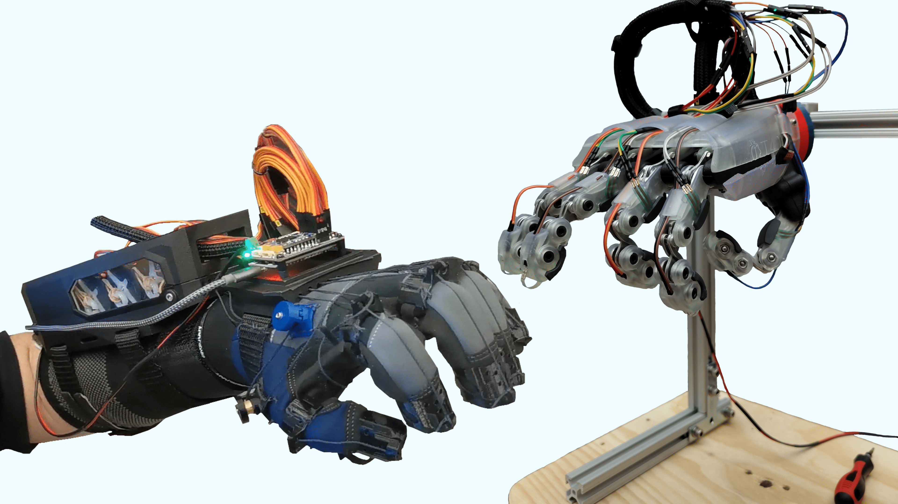
For my 4th year capstone, I worked with 5 other interdisciplinary students to design a 2-in-1 package haptic controller glove and custom end-of-arm tool (EoAT). Movement of the hand and arm would be tracked and mapped to any common industrial robot arm, while finger movement would be mapped to the robotic hand.
- I was the mechanical lead on the user end, tasked with designing the glove which would track hand movement and finger curling.
- As well, I aided the finger linkage design for the EoAT by creating a visual calculator to study motion, and determine finger sizing.
Our Final Design Report
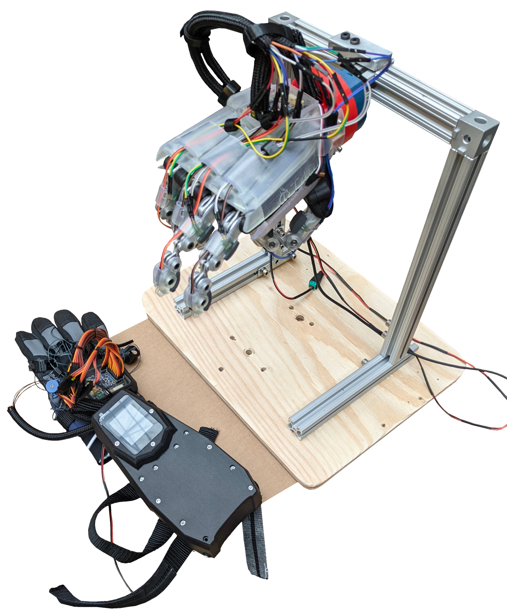
The Glove:
- Surface modeled enclosure conforms firmly to the user hand while housing PCB stack
- Tension-based system tracks up to 10 degrees-of-freedom of finger curling
- Forearm enclosure houses modified servo motors which lock and combine with vibration motors to provide “haptic” sensation
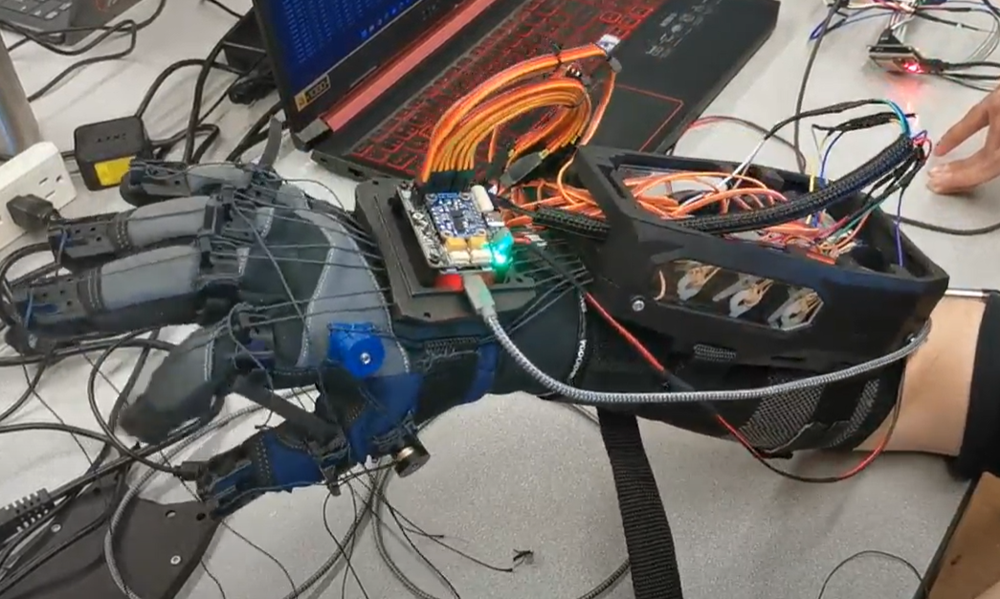
The EoAT:
- Waterjet cut aluminum linkages provide 2kg of grip strength and 1kg payload capacity
- Force-sensitive resistors detect when fingers collide with an object, relaying information to the glove
- Flexible-resin outer shell provides grip on a variety of common objects
- ISO standard adapter allows mounting to common robot arms (FANUC, Kinova, KUKA)
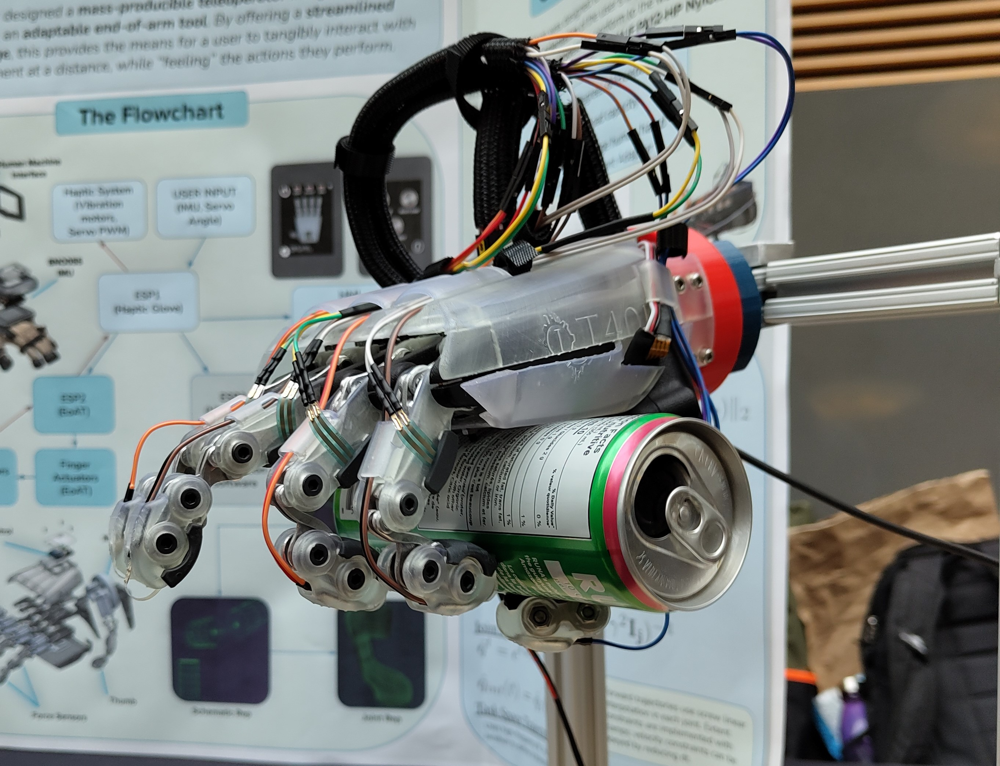

Ideation:
We started the project by researching the use cases and current target market for robotic teleoperators. We aimed to develop a device which could accurately track user movement 1:1 to a robot arm and bionic hand, allowing remote operation for scenarios which are difficult to access due to dangerous environments or long distance.
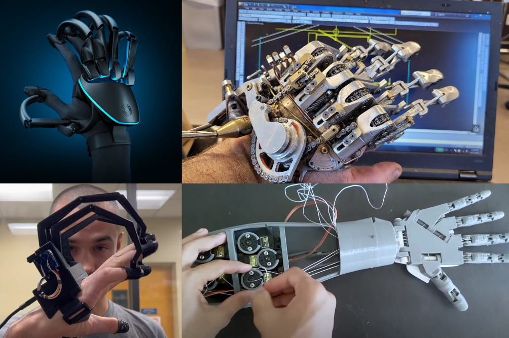
Tracking System:
Current tracking methods primarily use servo motors at each joint, or photonic components such as LiDAR to track finger movement. The first case is often bulky on the fingers, while the second can be quite expensive. We opted for a tension line based system, using strings attached to servos to conform to the finger curling, while tension springs retracted the motion.
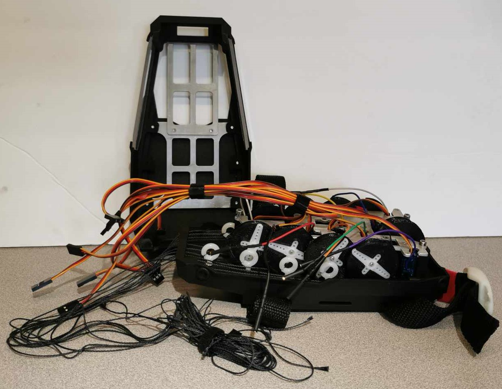
Glove Modeling:
The glove was developed using surface modeling to generate a surface which best conforms to the hand. In order to minimize the weight, the back-of-palm enclosure contains the PCB and IMU, while channels carved into the sides allow wiring to reach the forearm enclosure, where the bulk of the system is housed.
I made use of DFA principles by minimizing fasteners on the glove through pressure-fit components, and made sure all parts on the forearm could be easily accessed by implementing split lines where the enclosure could be disassembled for maintenance.
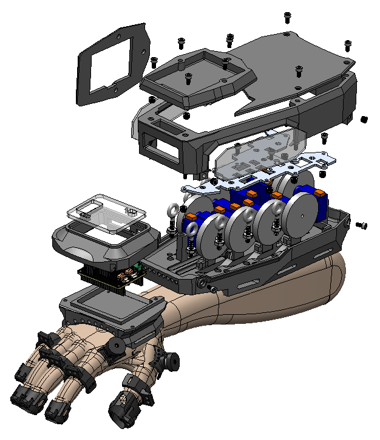
Finger Modeling:
Dimensions for the bionic hand were decided based on a study of Turkish male dentistry students, which guided the overall ratios for palm, finger, and thumb design.
In order to streamline the electronics, we made use of under-actuated four-bar linkages powered by linear actuators. I worked on developing a calculator in SolidWorks making use of sketch blocks to compartimentalize each linkage and simplify the design process. With this, I was able to achieve a 150-degree range of motion by converting our limited 20mm linear stroke to rotational displacement.
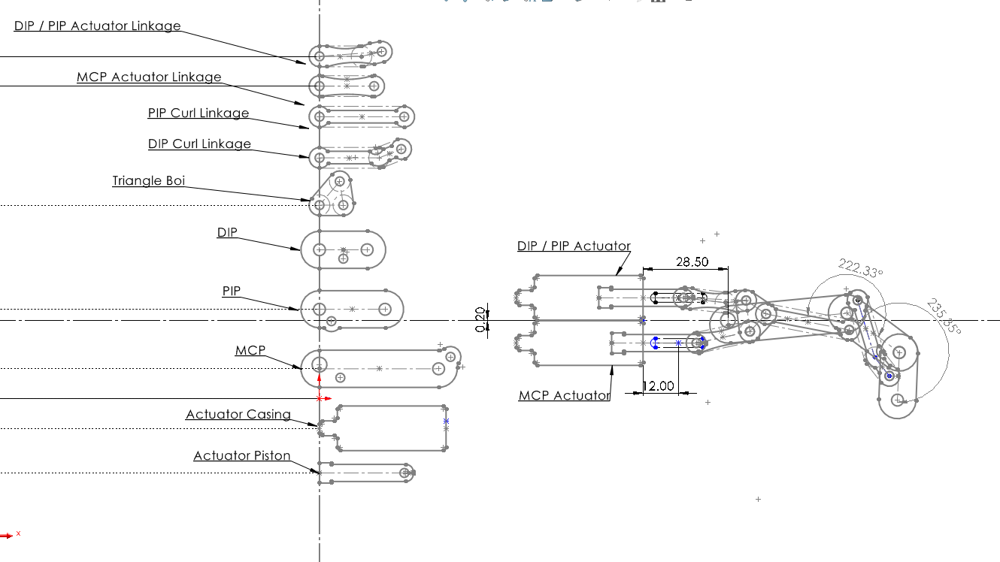
Fabrication:
Our finalized parts were sent to an external manufacturer to produce the components from Multi-Jet Fusion (MJF) 3D printing. PA12-HP Nylon served our purposes better than PLA or ABS due to having a lower density, while also having comparable strength and isotropic properties (compared to FDM printing). The finger linkages were waterjet cut from ⅛” aluminum sheet before being post-processed by hand. Each linkage was tested for any play resulting from machine tolerances, before being fit onto the palm assembly.
Finally, a custom PCB was designed making use of an ESP-32 microcontroller on a custom breakout board modified for 5V, 6V, and 12V rails for all the components. The PCB was designed to be scalable, allowing the same board to be used on both the glove and the EoAT.
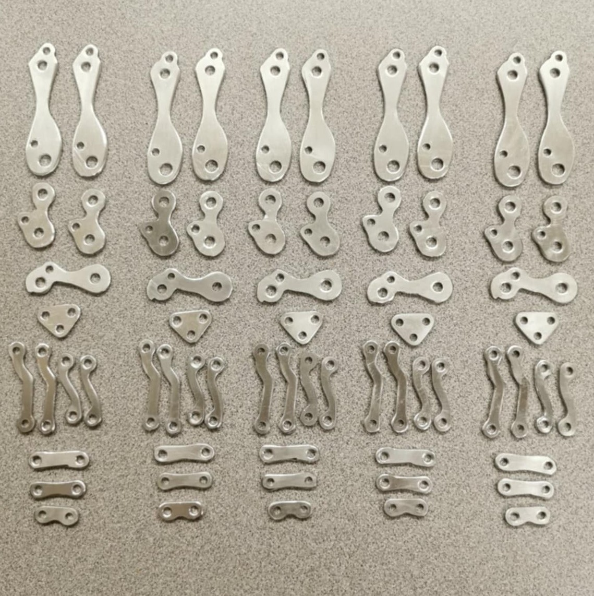
Software:
In parallel with the development of the physical glove and EoAT, one of our members was developing software which would translate position information from the IMU (a given point in space) and perform inverse kinematics to generate a realistic pathway for the robot arm to trace.
Though our team had gotten limited access to a robot arm, this was near the end of the project timeline so we were not able to integrate the full product in time for a final demonstration. Our workaround was a visualizer which could show the individual prismatic and revolute joints, allowing us to demonstrate the path finding algorithm despite not having a physical robot arm.
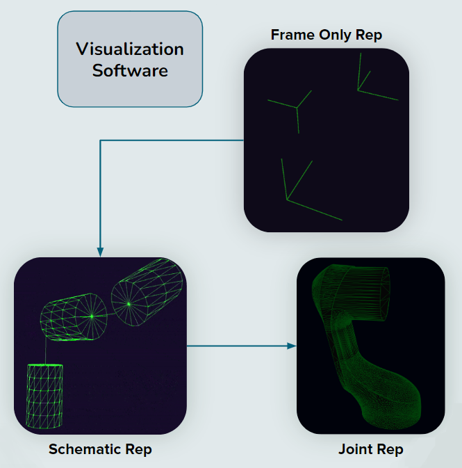
Though we were unable to gain access to an industrial robot arm, our visualizer demonstrated our tracking and pathing algorithms worked for mapping the user’s hand to a given point in space.
The glove and EoAT successfully showcased at the UBC 2024 Design and Innovation Day event, allowing the general public to manipulate common everyday objects. The haptic response was reported to be sufficiently immersive, and the latency and movement of the EoAT felt intuitive.
Awards:
- IGEN Faculty Award (4th Year) - 1st of 11 University student teams
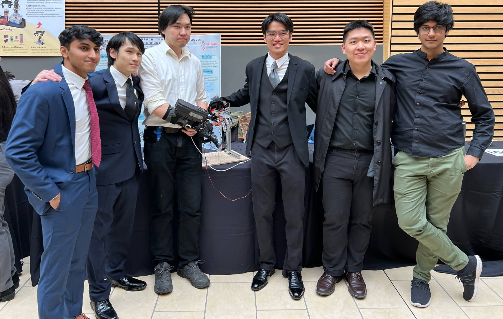